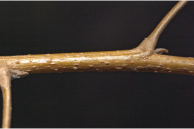
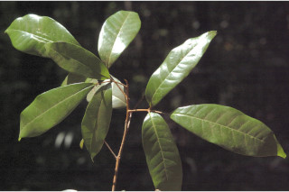
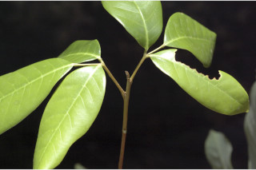
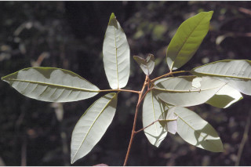
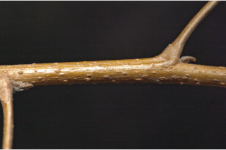
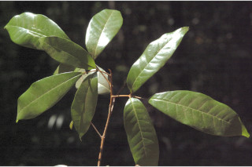
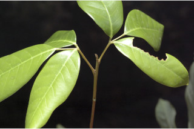
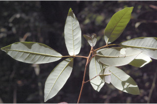

Images :
 









| Habit : | Trees up to 15 m tall. |
| Leaves : | Leaves compound , trifoliate , alternate , spiral ; rachis up to 5 cm long, triangular, pulvinate , glabrous ; petiolule of side leaflets 0.4-1 cm long and middle leaflet with 1.3-3 cm long, swollen at both ends, angled or subterete ; lamina 4-15 x 2.5-5 cm, variable in shape, narrow oblong to elliptic or narrow obovate , apex acuminate with retuse tip or rounded with retuse , base acute to cuneate , margin entire , chartaceous to subcoriaceous , glaucous beneath; glabrous ; midrib flat above; secondary_nerves 7-13, gradually curved; tertiary_nerves broadly reticulate , slender. |
| Inflorescence / Flower : | Inflorescence terminal or axillary panicles ; flowers greenish-yellow. |
| Fruit and Seed : | Berry ovoid , to 1.3 cm long; seeds 1-2, pale brown, enclosed in a white fleshy aril . |